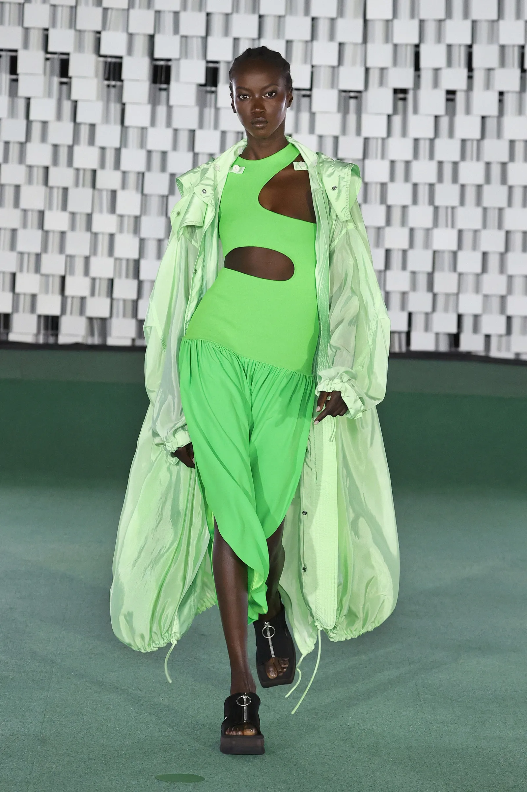

Top 5 Tiendas de Ropa Sostenible en Bogotá
Bogotá se ha convertido en un punto clave para la moda sostenible en Latinoamérica. En medio de un crecimiento en la conciencia ecológica, han surgido marcas que no solo ofrecen estilo, sino también compromiso ambiental y social. Aquí te dejamos cinco tiendas que están liderando este movimiento.
1. Amores Eternos: Tienda de upcycling con piezas únicas hechas a partir de ropa reciclada. Cada prenda es irrepetible y hecha con amor. 2. Sieta Clothing: Marca genderless que promueve la inclusión, el diseño minimalista y la producción ética local. 3. Baobab: Diseños cómodos y modernos con fibras naturales y tintes ecológicos. Ideal para quienes buscan un look casual y consciente. 4. True Love Vintage: Especialistas en ropa vintage curada cuidadosamente. Un lugar para encontrar verdaderas joyas del pasado. 5. La Troja: Espacio colaborativo donde convergen distintas marcas sostenibles nacionales, todas con un enfoque ético.
Además de comprar con propósito, visitar estas tiendas es una experiencia creativa. Te permite descubrir nuevos estilos, apoyar diseñadores locales y formar parte de un movimiento que redefine el consumo de moda.